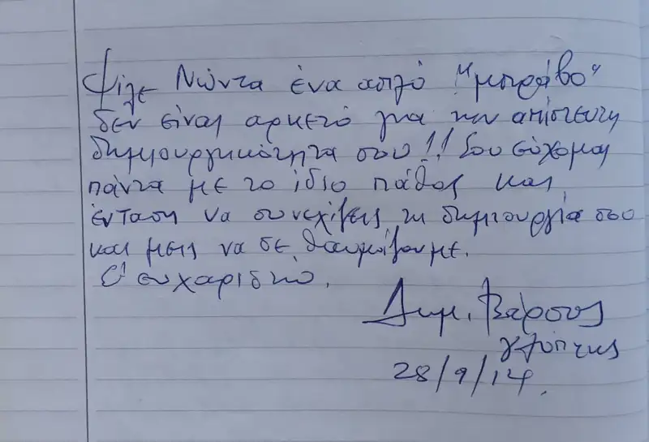
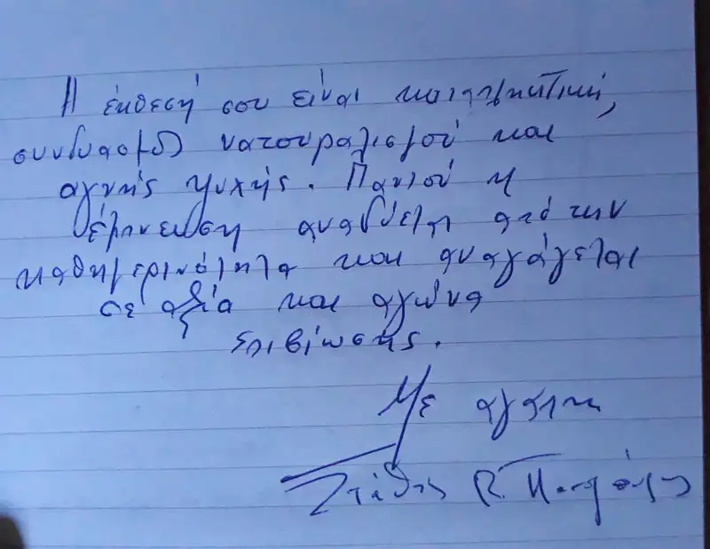
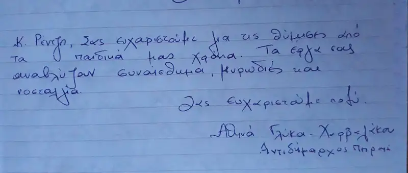
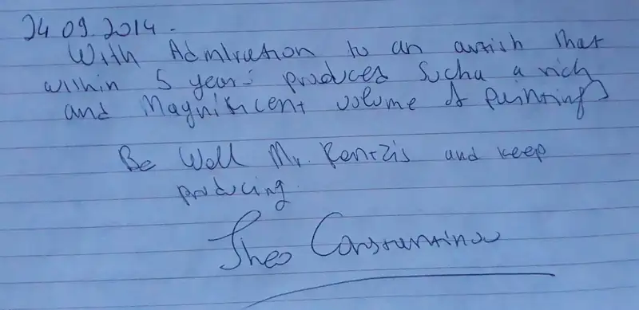
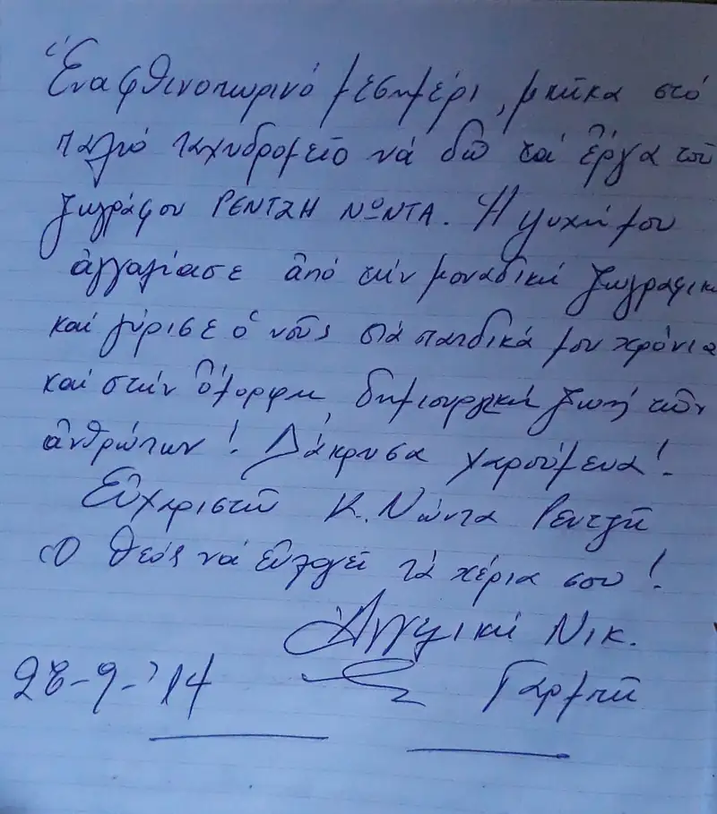
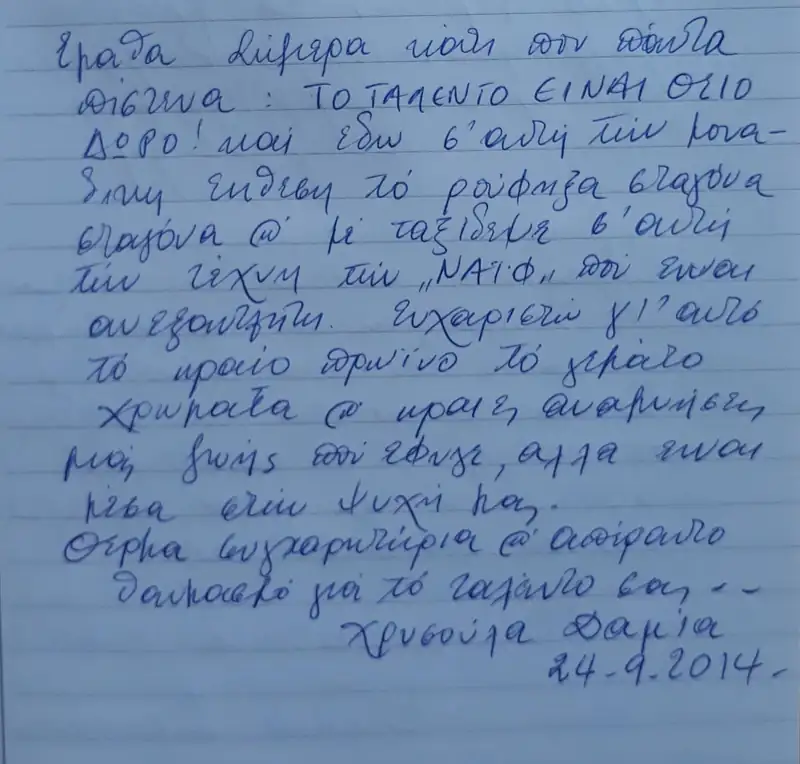
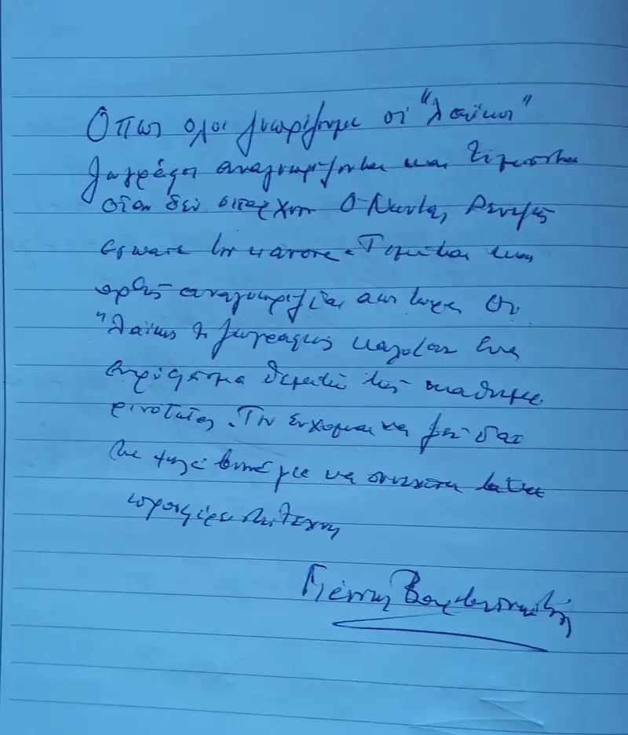

ΕΚΘΕΣΗ: ΔΗΜΟΤΙΚΗ ΠΙΝΑΚΟΘΗΚΗ ΠΕΙΡΑΙΑ
20 - 28 Σεπτεμβρίου 2014
ΘΕΜΑ: "Βιοπάλη και μεράκι"
Αγκυροβόλι στην Δημοτική Πινακοθήκη του Πειραιά
Το λιμάνι του Πειραιά, το λιμάνι προορισμός και σημείο φυγής για όλους μας ή κάποιους κοντινούς μας, το λιμάνι σύντροφος σε ταξίδια αναψυχής αλλά και σε ταξίδια ζωής δεν γινόταν να λείπει από την εκστρατεία στην μνήμη μας που έχει στήσει εδώ και χρόνια με τα χρώματα και τα πινέλα του ο σύγχρονος λαϊκός ζωγράφος Νώντας Ρεντζής.
Η Δημοτική Πινακοθήκη Πειραιά στο Παλιό Ταχυδρομείο της οδού Φίλωνος 29 φιλοξενεί την μεγαλύτερη μέχρι τώρα ατομική έκθεση του ζωγράφου από το Σάββατο στις 20 και μέχρι και την Κυριακή στις 28 Σεπτέμβρη.
Η έκθεση με τίτλο "βιοπάλη και μεράκι" παρουσιάζει τους ξωμάχους και επαγγελματίες της προηγούμενης γενιάς, αδιαχώριστους από την ελληνική φύση και το μεράκι και την αγάπη τους για τη ζωή. Φιγούρες και στιγμές μιας ξεχασμένης νοσταλγικής καθημερινότητας που έχουν αγκυροβολήσει στην συλλογική μας μνήμη και περνούν με αφηγήσεις από γενιά σε γενιά ζωντανεύουν μέσα από τους πίνακες του Νώντα Ρεντζή.

Τη Δευτέρα 22 Σεπτεμβρίου έγιναν τα εγκαίνια της έκθεσης. Φίλοι και φιλότεχνοι ήταν όλοι εκεί, οι παλιότεροι για να ξαναθυμηθούν, οι νεώτεροι για να γνωρίσουν και όλοι μας για να μην ξεχάσουμε.
Στα εγκαίνια παραβρέθηκαν: ο τ. υπουργός και συγγραφέας Ιωάννης Βαρβιτσιώτης, ο βουλευτής και τ. υπουργός κ. Στάθης Παναγούλης, ο πρόεδρος του ομίλου Unesco Πειραιά κ. Γιάννης Μαρωνίτης, οι πρώην νομαρχιακοί σύμβουλοι Εύη Καρακώστα και κα Βιολέττα Γεράνη, ο Δ/ντης του τμήματος χαρακτικής της Ανώτατης Σχολής Καλών Τεχνών κ. Μιχάλης Αρφαράς, ο τ.Γενικός Δ/ντης της ΔΗΡΑΠ κ. Δημήτρης Κρητικός, ο πρόεδρος της ένωσης το «εργαστήρι» κ. Στέλιος Μαρούλης, ο προϊστάμενος της πινακοθήκης κ. Μιχάλης Τσεκούρας, ο φωτορεπόρτερ κ. Άρης Κοτσολάκης, οι κυρίες Κατερίνα Βαρελά και Κική Μακρογαμβράκη, ο κ. Γιάννης Καρύτσας γενικός γραμματέας της Αιτωλικής πολιτιστικής εταιρείας, η κ. Μ. Κεράνη καθηγήτρια της οδοντιατρικής σχολής Αθηνών, η οδοντίατρος κ. Φωφώ Σπανού, ο μουσικολόγος κ. Πάνος Σαββόπουλος, ο δικηγόρος και ποιητής Δημήτρης Πιστικός και πολλοί άλλοι.
Την έκθεση προλόγισε ο Δ/ντης του τμήματος χαρακτικής της Ανώτατης Σχολής Καλών Τεχνών κ. Μιχάλης Αρφαράς.
Η έκθεση τελούσε υπό την αιγίδα της Δημοτικής Πινακοθήκης Πειραιά, του ομίλου φίλων Unesco Πειραιά και νήσων, της ένωσης καλλιτεχνών και λογοτεχνών Ηλιούπολης το «εργαστήρι».








